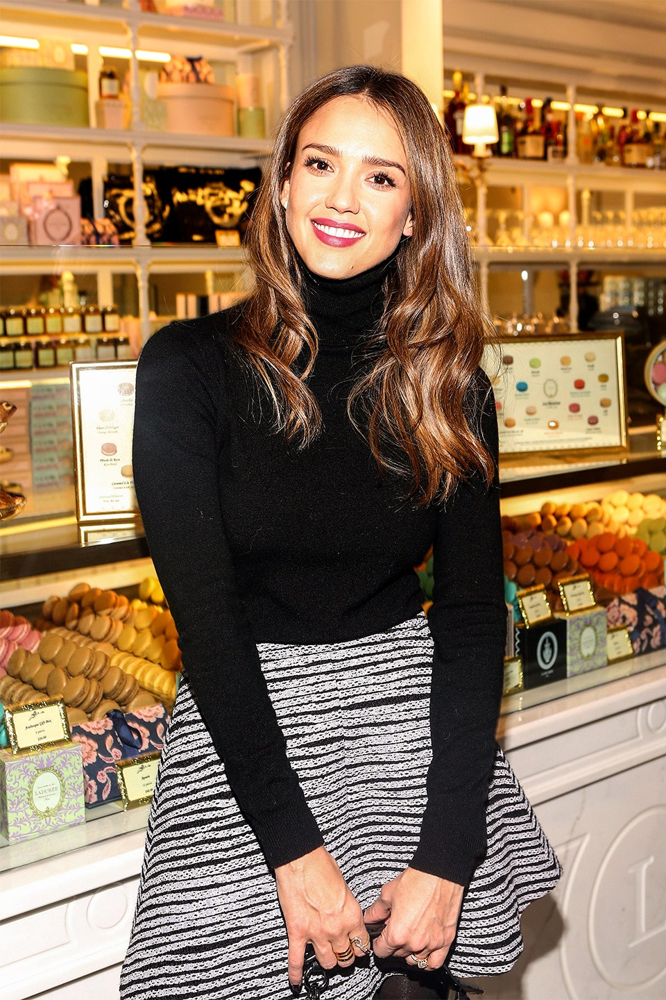

How Jessica Alba Built A $1 Billion Company, And $200 Million Fortune, Selling Parents Peace Of Mind
It's Kombucha Thursday at the Santa Monica headquarters of The Honest Company, which means that groups of young, stylish workers gather at communal tables in a converted toy factory to slurp fashionable fermented tea. Jessica Alba, Hollywood star and company cofounder, sits in the adjacent room. She'll join her troops.......
BY Clare O'Connor 4 years oldRecently, Some Call Her A Cheater For Creating The Honest Company. Here Is Why Rumor Started, But The Truth Is: She Did Not Cheat.
The Honest Company By Jessica Alba was a success and now, many people creating using the method she used. More success companies might be on the way. The company's shampoo, body wash and beauty, are now in competition again.
BY PAUL CHI DECEMBER 22, 2016Jessica Alba Reveals Her Secret Sauce for Success
essica Alba’s billion-dollar business empire, the Honest Company, is more popular than ever. According to Forbes, her estimated net worth in 2016 is an astounding $340 million. Alba’s bank account may soon be growing even bigger. The private company—launched in 2011 and recently valued at $1.7 billion—is reportedly in talks to be bought by Unilever, which makes Dove soaps and Axe body sprays. How did her green start-up become desirable and so enormously successful?
“I think the secret is surrounding yourself with people who are incredibly smart, staying focused on the mission and making sure—regardless the size of your company—is that you have alignment,” Alba told Vanity Fair while attending the grand opening of the Parisian macaron shop Ladurée, in partnership with the charity group Baby2Baby, at the Grove in Los Angeles on Tuesday evening. “Those are all very important things in building a business. It's helped our company.”
Since founding it in 2007, Alba’s stake in the Honest Company has made her richer than LeBron James ($275 million) and Beyoncé, whose net worth is reported to be about $290 million. Her response to the staggering statistic: “I don’t pay attention to that kind of stuff,” Alba said with a stern look. Her advice to other entrepreneurs looking to build their own company and to be successful as her is to never give up.
When asked if she had any tips for Ivanka Trump, another mother who also runs her own company, Alba is hesitant to provide any guidance.
“She’s way more successful than most people,” she said. “I don’t want to comment on her specifically, because that’s none of my business. She’s a well-established businessperson, and she’s not an entrepreneur trying to start out. She has a lot under her belt, and she’s been running a business for a very long time."
Politics aside, Alba has no problem discussing the downsides of being a mogul. She may seem to have it all—fame, career, and money—but balancing her work life and family life has been a challenge.
“I’m tired! I feel like a lot of people and a lot of parents feel like they have to juggle their life, and I’m like everyone else. It’s really hard,” Alba candidly admits. “But you know what, I am really lucky to have a great support system . . . Without them, I can’t do it all. I try to prioritize. My kids and family always come first. Time management is something I'm always trying to figure out. No two days are the same. It’s a constant struggle.’
Fortunately, Alba will have some downtime for the holidays and a chance to spend time with her family. As part of their Christmas tradition, she’ll pretend to be Santa Claus for her two daughters Honor, eight, and Haven, five. “They still believe in Santa. Even if my eight-year-old doesn’t believe, she’s leading me on that she still believes cause we say, ‘Santa only brings presents to those who believe in Santa,’ and she wants those presents,” said Alba. “She wrote a letter and she seems to be into it. She’s like, ‘I didn’t write a letter to Santa last year and I got board games and so I’m going to write a letter this year and get what I really want.’ So I was like, ‘Totally. You should do that!’ It’s a fun time. I hope they don’t stop believing.”
BY PAUL CHI DECEMBER 22, 2016Jessica Alba Gets Real About How She Makes 'The Honest Company' Thrive

While most stars make headlines because of the clothes they’re wearing or who they’re datings, others use their platform to shift into entrepreneurial pursuits. Jessica Alba is one such celebrity turned businesswoman. The box office movie star launched her business, The Honest Company in 2011 with a range of non-toxic beauty and baby products.
While the company’s sales soared early on, it also took major public hits and had to defend its clean brand image. At a recent Wall Street Journal event, Alba discussed the struggles of startup life, the setbacks her company has undergone and how she sees the success behind it all.
Although the company started with humble beginnings and only 17 products, it has skyrocketed into a notable business making millions of dollars every year and adding a wide range of items. The star explained that she was inspired by the birth of her first child, Honor, to start the company since she had had negative experiences with harmful chemicals in products.
Alba shared, “I think I just felt like it just needed to exist. I was a frustrated consumer nine years ago when I became a new mom, almost ten years ago. I just felt like there was a huge white space and a lack of options for people that want clean ingredients but want products that really work.” Alba continued, “It really came from a place of I wanted to ensure that my children were healthy and I couldn’t be sure that what I was buying on the shelf was going to not give them some kind of reaction.”
Alba went on to explain how her personal experiences influenced the way she molded the company and the products. For example, she created a diaper subscription service to make customer’s lives easier after having gone through her own diaper mishaps as a new mom. She also explained how the company embraced the online community early on, because that was where she personally shopped and felt most comfortable as a consumer.
BY DESIRÉE KAPLAN 10 MONTHS AGO